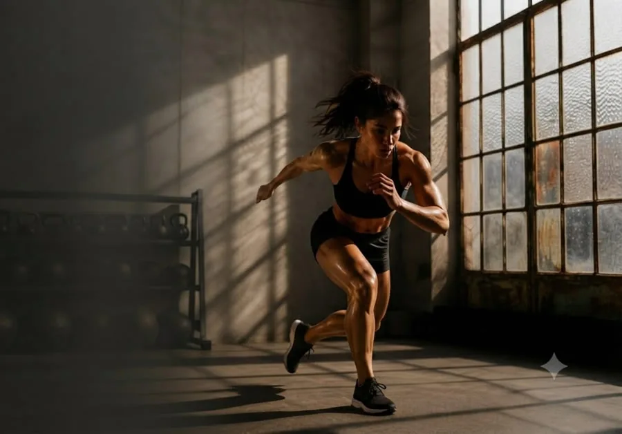
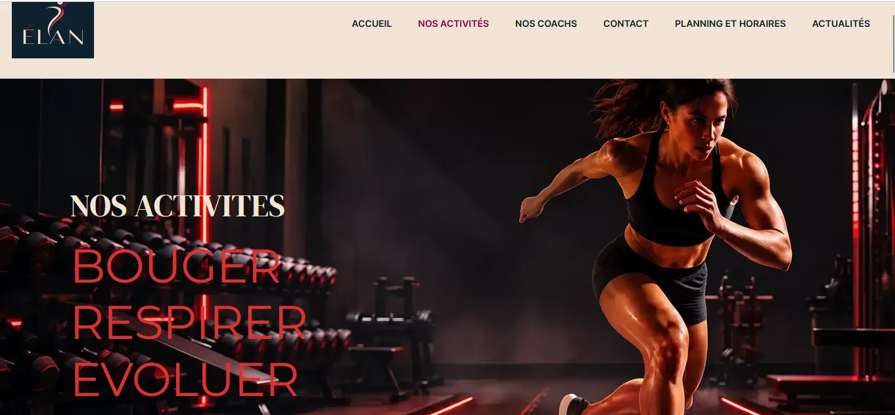

Studio Élan
Salle de sport : yoga, Pilates, boxe, HIIT. Charte « Énergie urbaine ».

Le projet
Projet d'école réalisé à Digital Campus Paris, en équipe de trois (« Studio Nova »). Site fictif pour Élan, une salle de sport multi-activités (yoga, Pilates, boxe, HIIT, renforcement, cardio) fondée par Debbie Scotto. Objectif : un site clair qui donne envie de réserver un premier cours.
Mon rôle
Analyse de la demande de la cliente, rédaction du cahier des charges, création des personas, définition des objectifs du site, impact mapping, task flow et user flow, choix de la charte graphique « Énergie urbaine » avec la cliente, puis création du site sous WordPress et cahier de recette avant la mise en ligne.
Outils
WordPress · Elementor · Canva (personas, objectifs, impact mapping, task flow, user flow, présentation) · travail en équipe et suivi de projet.
Ma démarche
De la demande de la cliente au site en ligne, en neuf étapes.
- 1
La demande
Analyse du brief de la cliente : ses activités, sa cible, ses attentes.
- 2
Le cahier des charges
Formaliser le besoin : objectifs, contenus, pages, fonctionnalités, contraintes et planning.
- 3
Les personas
Deux profils types pour comprendre les besoins et les frustrations des visiteurs.
- 4
Les objectifs
Neuf objectifs définis à partir de la demande de la cliente et des personas.
- 5
L'impact mapping
Relier chaque objectif aux personas, aux changements attendus et aux fonctionnalités du site.
- 6
Task flow & user flow
Dessiner le chemin de chaque persona sur le site, étape par étape, jusqu'à l'action : réserver un cours, contacter le studio.
- 7
La charte
Choix de la charte graphique « Énergie urbaine » avec la cliente : couleurs, typographies, ambiance.
- 8
Le site
Création du site sous WordPress avec Elementor, responsive sur mobile, tablette et ordinateur.
- 9
Le cahier de recette
Tester chaque page et chaque fonctionnalité, noter les anomalies et les corriger avant la mise en ligne.